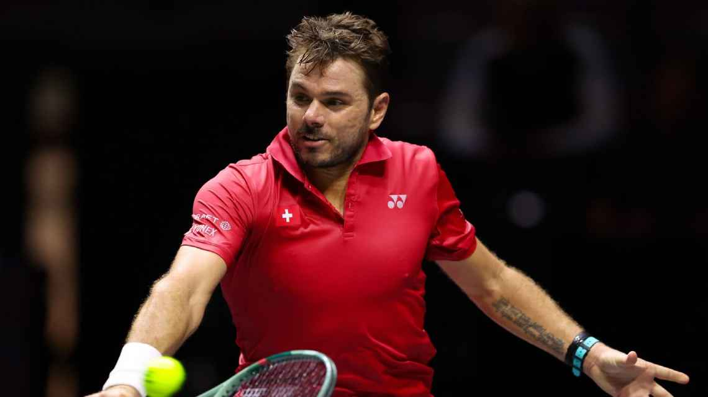

Noticias del deporte
Alcaraz superó a Evans y ahora va por Dimitrov en Shanghai
Alcaraz superó a un duro Evans para seguir en ShanghaiPor 7-6 (1) y 6-4, el español se impuso ante el británico y ahora irá ante Dimitrov en busca de un lugar en los cuartos de final.

Schwartzman le puso fin a una larga racha negativa ante rivales Top 10
Schwartzman brilló y sacó pasaje para los octavos de Shanghai. El argentino se impuso por 6-4, 3-6 y 7-6 (5) ante Fritz, para seguir con vida en el Masters 1000.

Stan Wawrinka jugará en Buenos Aires y en Río de Janeiro en 2024
¡Stan Wawrinka dirá presente en el Argentina Open 2024! El tres veces campeón de torneos de Grand Slam confirmó su participación en el ATP 250 de Buenos Aires, que se llevará a cabo del 10 al 18 de febrero. (Credit/ TW ArgentinaOpen).